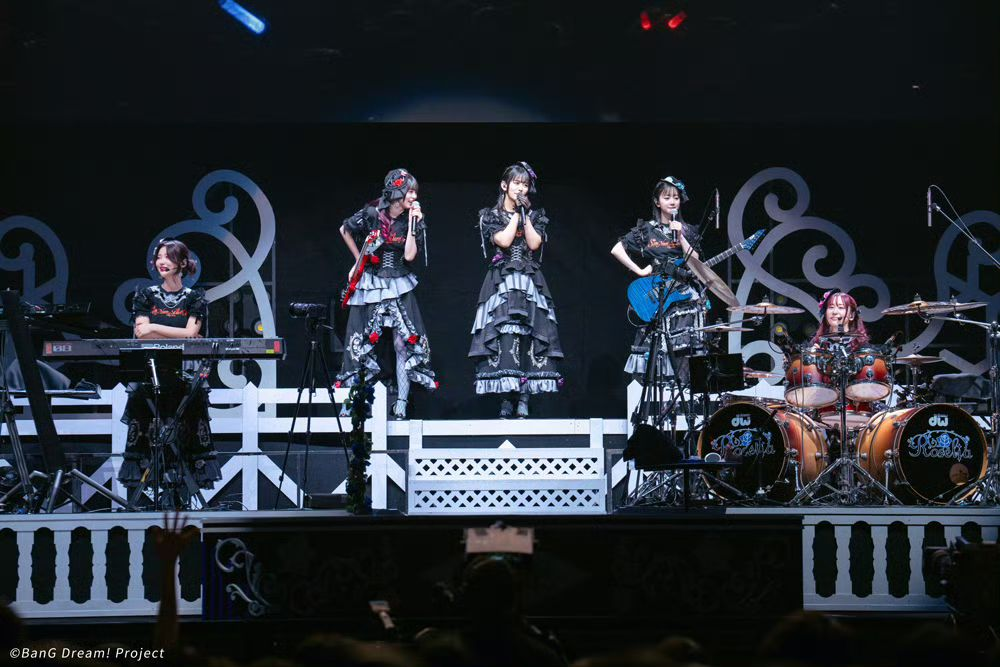
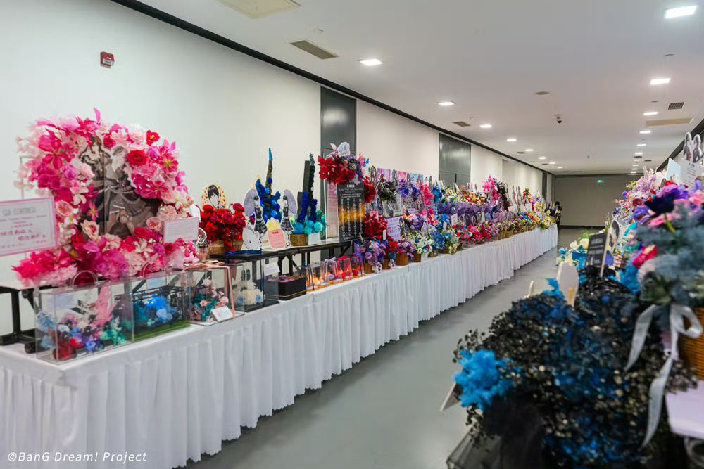
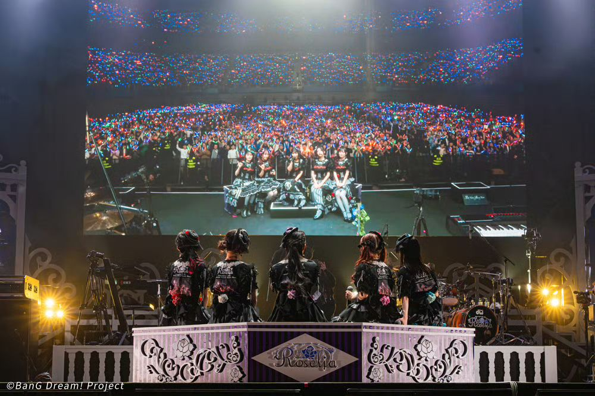
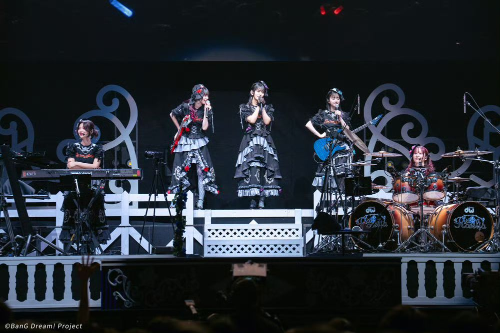
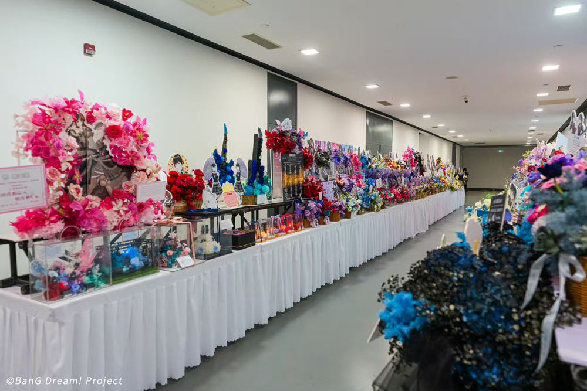
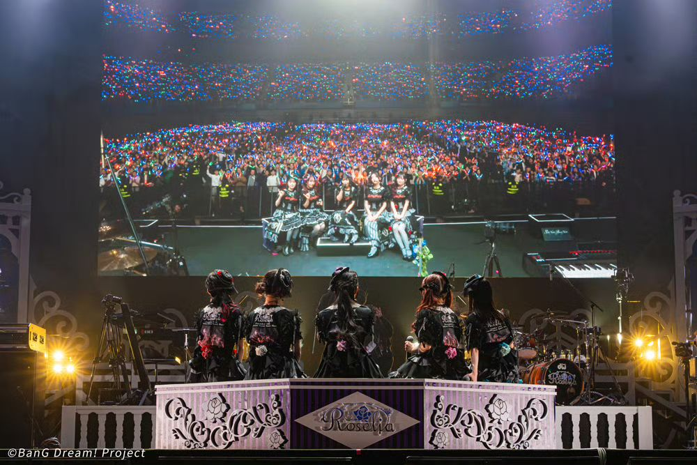

日麻系列教程1：日麻役种常见一览
时间：2025-03-12 作者：Jiaqi Z.
分类：桌游
这套教程是专门为同学学习日麻所写的，主要是为了帮助他们更容易记住这些役种。在开始学习役种之前，我们需要首先明确几个名词：
- 门清：没有吃牌、碰牌、明杠、加杠的行为（只有暗杠也算门清）
- 副露：有吃牌、碰牌、明杠、加杠
- 风牌：东、南、西、北
- 三元牌：中、发、白
- 字牌：风牌+三元牌
- 老头牌：数字1和数字9（1万、9万、1索、9索、1筒、9筒）
- 幺九牌：老头牌+字牌
我们首先会列出常见的役种列表，在后面会详细说明它们的含义
役种列表与记忆方法
- 一番役：【立直】、断幺九、【平和】、【一发】、【门前清自摸】、【一杯口】、役牌
记忆技巧：可以简记为“立断平一发自摸一杯口”，这是因为这些役种往往组合出现，后面还有一个“役牌”。
- 二番役：<三色同顺>、三色同刻、三杠子、三暗刻、小三元、<混全带幺九>、对对和、【七对子】、混老头、<一气通贯>
记忆技巧：几乎所有带“三”的役种都是二番役，还有和对子刻子有关的七对子，对对和。
-
三番役：<纯全带幺九>、<混一色>、【二杯口】
-
六番役：<清一色>
注：上述役种中带【】表示为门清役，即只有门清状态下才能成立；<>表示食下役，即副露下减一番。上述役种中带颜色的表示存在上位役满役种
记忆技巧：可以将“混一色”和“清一色”统称为染手，即可以记忆“食下役”为“三色、一气、全带、染手”，其中全带包括“混全带幺九（二番）”和“纯全带幺九（三番）”；染手包括“混一色（三番）”和“清一色（六番）”
-
常见的役满：四杠子、四暗刻、大三元、清老头、字一色、绿一色、小四喜、国士无双、九连宝灯
-
双倍役满（有些规则也记为役满）：四暗刻单骑、大四喜、国士无双十三面、纯正九连宝灯
偶然役（不一定能做成的役，只有一番和役满）
- 一番：海底捞月（最后一张牌自摸）、河底摸鱼（最后一张牌荣和）、岭上开花（开杠后摸牌正好和牌）、抢杠（和别人加杠的牌，听国士无双时可以抢暗杠）
- 役满：天和（亲家配牌时直接和牌）、地和（子家在前面无吃、碰后第一张摸牌直接和牌）
役种详解
基本和牌型：m*AAA+n*BCD+EE（共14张）
术语：
- 刻子：AAA（三个完全相同的牌），通常包含碰牌所成的“明刻”以及手牌中的“暗刻”
- 顺子：BCD（三个花色相同、数字相连的数牌，例如234万、789索、123筒）
- 面子：刻子+顺子
- 对子：两个完全相同的牌
- 雀头：EE（对子）
- 两面：两个花色相同、数字相邻的数牌（不包括12、89），例如45万、34索、78筒
一番役
- 立直（门清役）：门清听牌
- 断幺九：所有牌均不含幺九牌
- 役牌：包含有场风/自风/中/发/白刻子（/表示“或”）
- 平和（门清役）：四组面子均为顺子+雀头不是役牌（场风、自风、三元）+听牌为两面顺子听牌
- 一杯口（门清役）：两组完全一样的顺子（例如345万345万）
- 门前清自摸（门清役）：在门清条件下自摸和牌
- 一发（门清役/立直限定）：立直后在一巡内和牌（立直后一圈内和牌），且中间无吃牌、碰牌、杠牌
二番役
- 七对子（非基本型，门清役）：7组不相同的对子
- 三色同顺：三组花色不同、数字相同的顺子（例如345万345筒345索）
- 三色同刻：三组花色不同、数字相同的刻子（例如333万333筒333索）
- 混全带幺九（食下役）：五组面子和雀头均“带有”幺九牌（1、9和字牌）
- 一气通贯（食下役）：相同花色的123，456，789三组顺子
- 对对和：所有面子都是刻子
- 三暗刻：三组暗刻
- 三杠子：三组杠子（明杠、暗杠、加杠均可）
- 混老头：五组面子和雀头均为幺九牌（1、9和字牌）
- 小三元：中、发、白任意两个刻子加另一个对子
三番役
- 纯全带幺九（食下役）：五组面子和雀头均“带有”老头牌（1、9）（即“混全带幺九”无字牌）
- 混一色（食下役）：五组面子和雀头均为同一种花色的数牌和字牌
- 二杯口（门清役）：两组“一杯口”（例如345万345万789索789索）
六番役
- 清一色（食下役）：五组面子和雀头均为同一种花色的数牌（“混一色”无字牌）
役满
- 四暗刻（门清役）：四组暗刻
- 四杠子：四组杠子（明杠、暗杠、加杠均可）
- 清老头：五组面子和雀头均为老头牌（1、9）
- 大三元：三组中、发、白的刻子
- 小四喜：风牌（东、南、西、北）任意三组刻子加另一个对子
- 国士无双（非基本型，门清役）：19万19索19筒+东南西北中发白，加其中任意一种的对子
- 字一色：所有牌都是字牌（风牌或三元牌）
- 绿一色：所有牌都是2、3、4、6、8索或发组成的
- 九连宝灯（门清役）：同种花色的1112345678999+同花色另外一张
双倍役满
- 四暗刻单骑（门清役）：四组暗刻+最后剩余单张听牌
- 大四喜：风牌（东、南、西、北）的四组刻子
- 国士无双十三面（非基本型，门清役）：手牌为19万19索19筒+东南西北中发白，听其中的任意一张
- 纯正九连宝灯（门清役）：手牌为同种花色的1112345678999，听同花色另外一张
（下篇预告：介绍如何“简单”地计算点数）
Roselia Live 「Stille Nacht, Rosen Nacht」上海官方返图（补充）
时间：2025-02-20
分类：BanG Dream!

 






Roselia Live 「Stille Nacht, Rosen Nacht」上海官方返图
时间：2025-02-16
分类：BanG Dream!
这是“老婆们”的照片返图……嘿嘿……


【快报】从刘谦魔术看排列组合与冒泡算法
时间：2025-01-31 作者：小七Seven@科普小白说
分类：科普
注：继去年讲解刘谦魔术之后，这又是一篇“快报”，用最短的方法给大家解释第一个魔术种关于排序问题所使用的——冒泡算法
回顾魔术效果
让我们从头回顾一下第一个“举杯”的魔术过程：
- 把杯子、筷子和勺子随意按照顺序摆放
- 将筷子和左边互换
- 将杯子和右边互换
- 将勺子和左边互换
- 左手举起最左边的东西，右手举起最右边的东西，放下左手的东西，右手一定是杯子
关于“冒泡排序”
在表演完这个魔术之后，网上有一些评论提到了“冒泡排序”。在某种程度上，它和这个算法是类似的，因此我们先用一些篇幅说明这个算法，在最后我们来解释一下——为什么这个魔术实际上不是冒泡排序。
冒泡排序（Bubble Sort）是最简单和最通用的排序方法，其基本思想是：在待排序的一组数中，将相邻的两个数进行比较，若前面的数比后面的数大就交换两数，否则不交换；如此下去，直至最终完成排序。由此可得，在排序过程中，大的数据往下沉，小的数据往上浮，就像气泡一样，于是将这种排序算法形象地称为冒泡排序。 ——以上内容转自“百度百科”
正如上面所解释的那样，冒泡排序实际上是计算机领域一个排序问题算法。
也许你会想问：为什么计算机需要排序算法？类比查字典这个过程，以《新华字典》为例，是按照拼音字母顺序排序的，也正因如此，对于知道读音的情况，熟悉字典的人可以不用查询前面的目录就可以定位到后面对应拼音的位置。对于英语词典更是如此。从计算机的角度看，有序数据更有利于后续的查找。
排列与组合
对于熟悉高中数学的人来说，这一部分可以跳过去
正如前面所引用的内容，冒泡排序需要对所有数字两两比较大小。于是涉及到一个问题——最多需要比较多少次？之所以选择“最多”的次数，是为了得到评估算法效率的时间复杂度。
让我们进一步抽象这个问题，就可以化简为：给定个数，需要需要选出2个数，最多有几种选法？或者再进一步推广一下，假设有个数，需要选出个数，最多有几种选法？
排列——考虑顺序的组合
以这个魔术为例，有3个物体，首先考虑一个问题，有多少种排列方法？让我们把三个物体暂时抽象成123三个数字，在选择第一个物体时，可以有3种选法；对第二个物体，由于第一个物体已经选定，所以只有2种选法了；对于第三个物体，则只剩下1个物体。于是最终的排列方法就是
进一步，假设我们有个物体，则第一个选择有种选法；第二个物体有种选法；以此类推，最后一个只有1种选法，所以最终的排列方法就是
上述运算我们也可以表示为“阶乘”，即
再考虑一下，如果在个物体当中选个物体进行排列，将排列的个数记为或者，参考上面的方法，可以得到结果为
组合——再把同一组删掉
正如标题所说的那样，所谓组合，就是在排列的基础上不考虑顺序，例如，对于排列而言，AB和BA是不同的，但组合中二者是相同的。因此，在计算组合时，我们只需要将之前排列的结果，除以每个组合中全排列的个数即可。
全排列：指的是将个物体中选出个进行排列，即开始时所考虑的
根据上面的解释，将个物体选个进行组合，其结果记为，表达式为
例如，将3个物体选2个，带入表达式可以计算出，即共有3种选法。
冒泡算法——一种“低效”的排序算法
在前面，我们提到：冒泡排序需要对所有数字两两比较，对于比较结果较大的数字，向后排（假设按照升序，当然也可以定为“降序”，这不是算法关键）。让我们假定一个例子，假设有这个一组数字：5，2，3，1，6；按照冒泡排序算法，首先比较5和2，发现5较大，则往后排，变为2，5，3，1，6，进一步比较5和3，发现5较大，则将5继续向后排，变为2，3，5，1，6，以此类推，当排序变为2，3，1，5，6时，将5和6比较，发现6更大，则将6放在后面，结束排序。
进一步对2进行移动，依次为
- 2，3，1，5，6（2和3比较后）
- 2，1，3，5，6（3和1比较后）
- 2，1，3，5，6（3和5比较后）
再对2进行移动（始终移动最前面的数字），依次为
- 1，2，3，5，6（2和1比较后）
- 1，2，3，5，6（2和3比较后）
最后，对1进行移动，和2比较后发现2比1大，结果最终排序为“1，2，3，5，6”
让我们看看上面总共进行了多少次比较：10次！这看似是一个小数目，但这仅仅是5个数据的比较，如果是10个呢？20个呢？甚至100个1000个呢？利用前面的排列组合知识可以计算得到，假设有个数据，选择2个进行比较，一共有
可以发现，比较次数是与数据量成平方关系上升，这在数据结构中记为时间复杂度为
这种平方数量级的时间复杂度实际上效率是很低的，尤其是随着数据量的提高。因此，在算法设计上，人们提出了更多高效率的算法例如归并排序算法（采用分治法），此时时间复杂度可以达到。下面的图片展示了对于数据个数从1-10情况下两种时间复杂度的比较。可以看到，相比于，的增长速率更低

上图为时间复杂度比较，其中蓝线表示，橙线表示
最后的解释
首先让我们定性说明一下——为什么这个魔术的原理不是冒泡算法。原因很简单，冒泡算法是需要比较的，同时我们可以很容易证明，对于3个物体，实际上比较3次应该是有固定顺序的。但显然事实不是如此。这是因为我们在交换时实际上没有进行比较。
那这个魔术是怎么变的呢？让我们再来看一下魔术步骤（我们省略掉开头的调整顺序和最后的“举杯”）：
- 将筷子和左边互换
- 将杯子和右边互换
- 将勺子和左边互换
我们假设将筷子记为A、杯子记为B、勺子记为C，在一开始会有6种情况（全排列），经过第一步移动，只会出现4种情况：ACB、ABC、BAC和CAB，经过第二次移动，这四种情况会变为：ACB（前两种一样）、ABC和CAB；对于B在最后的情况，第三步移动是多余的（因为不会影响B的位置），而对于ABC，第三步会变为“ACB”。
简单来说，最后的顺序只有两种可能——筷子、勺子、杯子和勺子、筷子、杯子。无论哪种情况，最右边一定是杯子。
一点题外话
与去年相比，很多人认为魔术原理更简单了。正如去年所说的那样，魔术的精髓并不是这个原理，而是表演的过程。事实上，从这个原理出发，可以设计出来这个魔术，难道不是更厉害吗？
如何从零开始进行程序设计
时间：2025-01-13 作者：Jiaqi Z.
分类：小教程-机器学习与人工智能
这一篇虽说是放在机器学习分类下，主要是为课题组内的同学所准备的，但这篇文章所说的一些想法，可能也适用于大多数程序设计的过程（无论是在科研过程中需要写程序、或者是做程序设计课程的课程设计等）。
本篇不会讲解具体的程序设计语言，例如Python、C语言等，而是一种通用的思考方法，可以帮助你更快上手进行一个较大的程序设计。
第一步：明确问题与需求
永远不要一开始就敲代码，仔细思考一下：要解决什么问题。大多数编程活动都是任务驱动或者问题驱动。例如，对于在校大学生而言，写程序可能是为了解决课本上的一个问题，或者老师的一个任务需求，又或者是论文上需要的一部分；对于软件工程师而言，写程序可能是为了实现产品经理的一个特定的需求，或者修复用户提出的一个bug等。盲目开始写程序，总是不可取的。
同时，在明确问题与需求之后，需要考虑的是：这段代码应该使用什么程序语言设计？例如，如果你是希望做机器学习与神经网络相关的，显然Python是更适合的；而像物理专业的一些理论计算，比如解方程等任务，可能使用MATLAB或者Wolfram Mathematica更方便；如果你是做嵌入式单片机的，那几乎就是C语言设计的……总而言之，选择一个合适的程序语言可能会让你的程序设计过程事半功倍。
如果你确实不知道该用什么编程语言的话，试试Python吧
第二步：拆分任务
程序设计的思维一定是模块化的思维，如果一个程序很小，例如判断一个数字是不是质数、或者使用欧几里得算法判断两个数字的最大公因数 等，只需要完成这一个任务就足够了。但通常情况下，使用程序解决的问题往往会很复杂，可能需要多个模块相互配合。这就如同一个公司要进行经营，需要各个部门的配合，其中每个部门都负责自己的内容，最后将其整合起来成为一个完整的公司架构一样。写程序的时候，也应当将任务进行拆分，拆分成一系列的“小任务”（也可以看作模块）。这个模块的大小可以因人而异（或者在具体的软件开发中，可能开发组内又有另外的分工），对于初学者而言，可能程序算法不是太熟练，此时可以将模块尽可能的小。例如，现在希望制作一个值日表安排程序，将一个时间段按照日期，每隔一定天数安排一个人，一共有6个人，按照顺序依次分配。此时我们的程序可能会拆分成这样几个任务：
生成日期-按照一定间隔取出日期-按照顺序安排6个人
注意：这些任务的划分是取决于程序设计者本人的（或者取决于项目开发组的）。
第三步：对每个任务进行拆分，设计步骤
有了具体的任务之后，我们就可以“逐一攻破”了。在程序设计的过程中，我们需要对每个任务进行进一步划分，将其划分为有限次数的步骤（这就是算法），这些步骤应当是确定的。例如，在上面的例子中，我们可能需要做这样几个算法（这些算法的每一步并不一定是一行代码，可能是多行代码，甚至有些步骤本身可能足够复杂到成为一个“任务”了）
- 读取起始日期和结束日期(yyyy1-mm1-dd1和yyyy2-mm2-dd2)
- 定义一个空的列表
dates（这个列表是广义上的列表，它可能是C语言中的数组，也可能是MATLAB等程序中的向量，也可能是Python中的列表） - 定义
i←0 dates[i]←yyyy1-mm1-dd1（这里面的←是一个比较常见的算法符号，表示将右面的值赋值给左边的变量）i←i+1- 查看
yyyy1-mm1-dd1+1（表示“下一天”）是否“小于等于”yyyy2-mm2-dd2，如果是，则进行第7步，否则进行第9步 yyyy1-mm1-dd1←yyyy1-mm1-dd1+1- 返回第4步
- 输出
dates列表
可以注意到，以Python为例，像第2步，第3步这些都是可以用一行表达式如dates=[]和i=0进行表示；但类似于第6步，查看某一天的下一天并不是一件“易事”（因为它涉及到一个月的最后一天的判断，甚至可能包括平年闰年的判断等），同时判断一天是否“小于”另一天也不是单纯的比较大小（可能需要三个数的比较），因此，我们可能会把第6步作为一个函数处理（完全可以把“函数”也看作是一种“任务”，但为了与前面的任务区分，我们这里使用“函数”，从程序设计的角度看，函数里面调用函数本身就是合理的）
第四步：从底层开始编写代码
这一步难度应该是“最低”的，因为它实际上就是用计算机语言把你前面所想的步骤表示出来。但是，在写代码的时候，有一些小技巧可以注意：
- 善用测试：任何人都不敢说可以一次写出正确的程序，大多数时间应当是调试、修改代码。因此，发现程序报错并不可怕，重要的是如何找到错误的地方。如果是一次性写完再测试，那工作量太大，且错误的可能性太大，因此，我们可以每写完一个任务或者一个函数，就测试一下函数的准确性。在测试的时候，可以在程序中以变量赋值的方式给定一些测试数据，或者使用像Python的
input()函数，以及C语言的scanf()等方式进行终端的输入（通常直接变量赋值是最方便的）。在输出时可以简单的终端输出，或者根据需要选择像文件输出等方式来判断输出格式的正确性。通常，在涉及底层算法时，其测试可以简单的终端输入输出；而涉及到交互时，可能会需要一些其他的方式（有时这可能需要前后端的配合，但从程序设计“哲学”的角度来看，前后端分离是必需的。）
还是以上面的例子为例，假设我们现在完成了函数addDate(date)函数，给定date函数返回它的下一天。在测试时，我们可以仅仅调用这个函数，给定几个特殊的date（例如，2024年2月28日、2025年2月28日、2023年5月30日、2025年1月8日、2024年12月31日等，可以看到，这里面包含了一个月最后一天，一年最后一天，平年闰年2月的判断，以及常规的日期），通过这几个测试例，可以很容易判断这个函数是否实现的预期的功能。如果测试通过了，可以想见，它在后面的程序中大概率也是正确的，如果测试不通过，一个函数的代码量也是比较小的，容易发现其中的错误。
以我个人的习惯为例，在完成一个函数时，我喜欢对其进行一个小的测试，判断它的功能是否正确；在完成一个大的任务时，我喜欢对其进行一个测试，判断它是否可以正确完成这个任务；在整个程序完成后，再对其进行测试，通常这时候就是判断各个任务之间的“衔接”是否合理。一个需要记住的是：越在早期排查出错误，越能避免后期造成更大更隐蔽的错误
-
善用AI：现在的程序设计，几乎AI是不可避免的。我也不反对程序设计中使用AI来生成一些代码。但是，需要特别注意的是：最多使用AI生成一个函数，千万不要使用AI生成一个“任务”，甚至整个程序，AI还没有那么强大，大概率会失控。此时出现的错误，非常难以排查。使用AI生成一个函数，甚至10行左右的语句实现一个功能，如果出现错误，人为排查是很方便的（详见第1条的善用测试）
-
平地起高楼，地基要打好：还是要本着底层设计的思路，千万不要想着“一口吃成个胖子”，再天才的程序员也做不到一次性写出上千行代码。慢慢来，一步一步来，从简单的开始像“搭积木”一样，最终实现复杂的功能不是难事。而且，不要羡慕别人能写几千、几万行代码，再复杂的代码也是由若干个功能实现的，可能每一个功能也就几十行代码。利用上面的方法，你也可以写出上千上万行代码。
-
一定要写注释！：把每一个函数做了什么，每一部分干了什么记录下来，在后期进行整合时会很容易（要不然你一定会“眼花缭乱”的）
双曲型、抛物型和椭圆型偏微分方程的区别
时间：2025-01-08 作者：Jiaqi Z.
分类：小教程
在数学物理方程（偏微分方程）中，我们了解了波动方程、热传导方程和泊松方程（或者拉普拉斯方程），并且也说，它们三个方程分别属于双曲型、抛物型和椭圆型。并且在“标准型”的讨论中，也了解了这些类型与存在直接相关的关系。
当听到“双曲”、“抛物”和“椭圆”时，免不了会联想到圆锥曲线，可以证明（或者其他教材中所说的那样），任何一个圆锥曲线，都可以写作下面的方程所表示的曲线
假设我们现在令和分别表示和，且等式两边同时作用于函数，则可以将上面的“圆锥曲线”写作下面的偏微分方程：
从而将这两个方程画上了“等号”。既然如此，我们就可以利用圆锥曲线的“形状”来定义微分方程的“类型”：
我们这里姑且不考虑参数，即只考虑最简单的这一“二次方程”。
-
假设这是一个椭圆方程，则利用已知的椭圆方程定义 不难得到，且，因此定义一个，可以得到对椭圆而言，
-
对于抛物线而言，假设一个最简单的方程 可以很容易得到且（若抛物线方程为，则），类似带入上面的定义，可以得到对抛物线而言，
-
对双曲线而言，其定义为 可以得到，从而对双曲线而言，。
代回微分方程
类似的讨论方法，让我们依次对三种“基本方程”进行讨论（假设我们只考虑齐次方程，因为非齐次项不影响方程类型）。
-
波动方程，其基本形式为 很显然，，利用圆锥曲线的讨论，这一判定式说明它是双曲型。
-
热传导方程，其形式为 其中，，从而，是抛物型
-
Laplace方程，其形式为 从而，判断，是椭圆型
关于杂谈的内容
时间：2024-12-23 作者：Jiaqi Z.
分类：杂谈
对于这个个人网页来说，目前已经成一定样式了，但总感觉还差点东西。差一点我自己的东西（当然，这网页里面每一个都是我自己写的）想了想，感觉还是做一个这种类似于博客性质的网页。正因如此，这个网页诞生了。
关于作者
与我的个人网页类似，这里面的作者大多数都是我，包括但不限于
- Jiaqi Z.
- “7小七Seven”以及其他类似如“小七Seven”、“小七”等名字
- Nana_Chan
- “Nana_L”或“Nana_R”
- “なな”或者带有叠字符号的“なゝ”（目前还没有使用片假名“ナナ”作为笔名）
- ……
但是，这里的作者也可能包括其他从别的网站转载的内容，或者课题组内其他人所写的内容，都会按部就班设置作者。
关于文章类型
目前共设置以下几种文章类型：
- 小教程：指的是一些单独的、或者目前还没有汇总在一起的教程，可能是课程的学习资料分享，也可能是一些小软件、小工具的使用方法等（注意：关于材料计算和机器学习两个分类，请在点开后打开对应内容查看）；
- 科普：指的是一些给非相关专业的人看的文章，有些也可能是计划发在“科普小白说”公众号的草稿（相比于公众号里面的内容，这里的可能更加简单，随性）
- BanG Dream!：指的是一些关于BanG Dream!游戏的内容，一些玩游戏过程中的想法，一些音乐、图片分享，甚至可能包括游戏晒卡等都会在这里（当然也不排除有一些发电内容）
- 桌游：关于一些桌游相关的文章，有些可能是桌游规则整理、或者是一些桌游的感悟等。当然，关于桌游评测与桌游照片等，请去相关网页查看
- 音乐：一些关于音乐的相关内容，可能是分享一些歌曲，或者可能自己写了（或改了）一首歌也会发在上面，也有可能是关于音乐理论的文章
- 游戏：一些关于游戏的内容（这里面的游戏主要指除BanG Dream!和桌游以外的那些游戏，主要是电子游戏）
- 杂谈：一些目前还不知道该放在哪个分类下，或者确实不知道应该放在哪里的文章。
你也可以在左侧通过“全部内容”查看所有文章。其中有些文章可能属于多个分类，例如，关于BanG Dream!的音乐改编，有可能同时放在BanG Dream!和音乐两个分类下；关于音乐乐理的介绍，有可能放在“科普”或者“小教程”和“音乐”分类下。
更新频率
这个……就不好催更了吧……（没必要要求我每天都写杂谈吧）
联系方式
- QQ:3585318203
- 邮箱：zhangjq_sd@163.com
- Bilibili：UID 123645189
- Github：github.com/JackyZhang00
- 其他相关联系方式请通过主页对应分类查看
Roselia Live 「Stille Nacht, Rosen Nacht」官方返图
时间：2024-12-23
分类：BanG Dream!


Linux当中for与VASPKIT“联动”
时间：2024-12-25 作者：Jiaqi Z.
分类：小教程-材料计算
在对VASP计算结果进行批处理时，有时需要借助于VASPKIT生成的文件，或者使用VASPKIT对数据进行分析。此时需要使用for循环，或者在脚本语言中实现对VASPKIT菜单的调用。
简单来说，我们希望找到一种命令的调用方法，模拟用户输入选项。而这种方法就是借助于echo命令和管道运算符。
注意：建议提前阅读教程内关于“高级Linux命令”一章的内容。
方法1
使用echo -e选项输出带有转义字符的文本，并借助于管道运算符|将输出的内容传递到vaspkit当中。例如，如果希望一次性生成静态计算的INCAR文件，可以直接写作：
[7Seven@localhost ~]$ echo -e "1\n101\nST" | vaspkit
运行后就可以看到vaspkit如同正常操作一般按照顺序执行对应的内容。其中，\n转义字符表示回车，即模拟用户进行回车操作（确认输入内容）
方法2
使用分号（;）依次表示所有的命令，并使用echo组合传递给vaspkit。例如，上述例子还可以写作：
[7Seven@localhost ~]$ (echo 1; echo 10; echo ST) | vaspkit
其中使用括号表示将括号内所有内容传递给vaspkit。在这一基础上，可以进一步做更复杂的操作。
在上述方法的基础上，可以使用for循环组合进行批量处理，并进行更复杂操作。例如，将所有当前目录下所有子目录内生成带有D3校正的静态计算INCAR文件，可以写作：
[7Seven@localhost ~]$ for i in *; do cd $i; echo -e "1\n101\nSTD3" | vaspkit; cd $OLDPWD; done
注意事项
vaspkit的调用方法取决于不同服务器，以所在服务器为准；- 在使用时，建议首先进行测试，确认vaspkit的选项顺序，在确保正确后再进行批量处理；
- VASPKIT参考文献：V. Wang, N. Xu, J.C. Liu, G. Tang, W.T. Geng, VASPKIT: A User-Friendly Interface Facilitating High-Throughput Computing and Analysis Using VASP Code, Computer Physics Communications 267, 108033 (2021). https://doi.org/10.1016/j.cpc.2021.108033